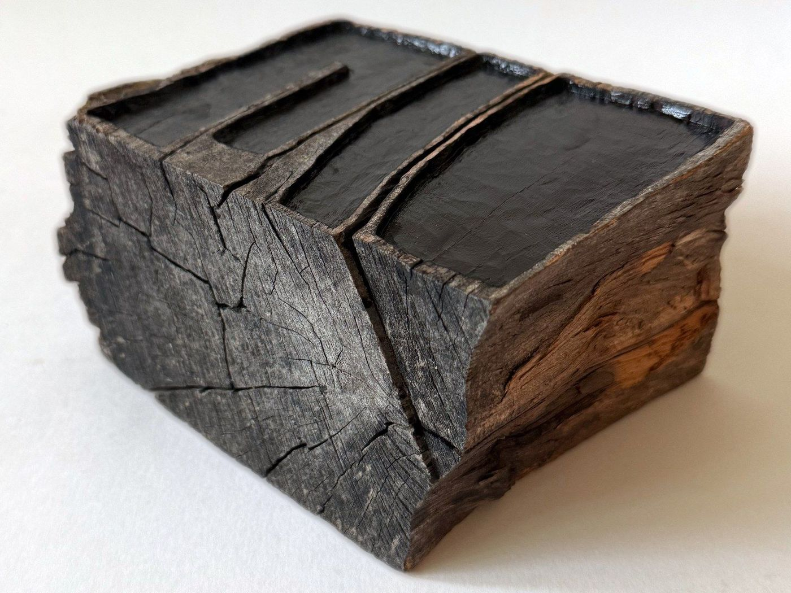
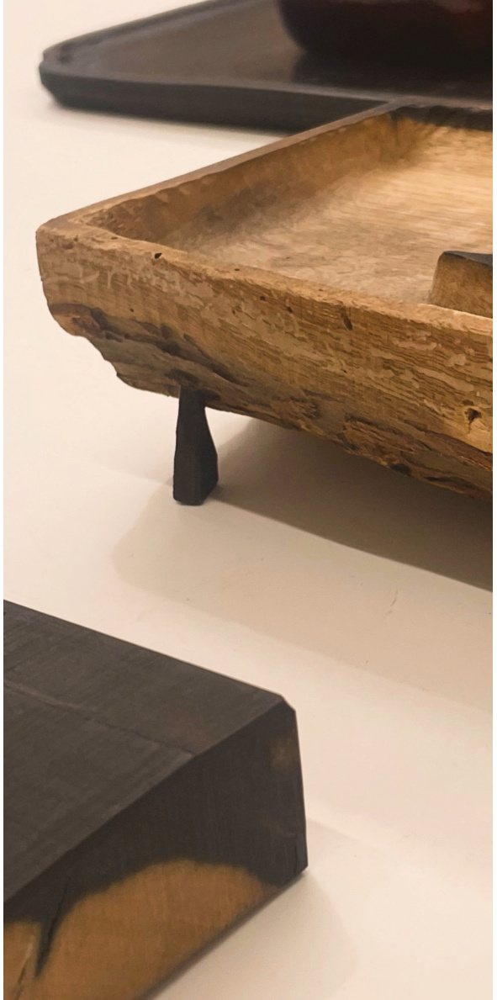

The wood had already spent its time splitting. On top of that time I worked the faces flat and filled them with lacquer — trying to make a place where a hand could meet it.
What I'm really after is the rim, left as thin as I dare. Thin enough that it looks about to give. That tension is the whole point.
Choi Sungwoo
Trees that split, that cracked, that never made it into timber. Might they have a second life too?
Mass production needs everything uniform. Most of the wooden things we use are ‘timber’ — kiln-dried and squared to a standard in a factory. I wanted to talk to the ‘tree’ instead. So I follow the dark figuring wherever it goes, and out come the lines time has left in the material. In Korean, Gyeol.

Details
From 2 × 4 × 2 cm, following the wood. Figured persimmon (meokgam) and others. Oil or unfinished.
As each piece is carved by hand, dimensions may vary. Slight differences in colour and form are the character of each individual wood.